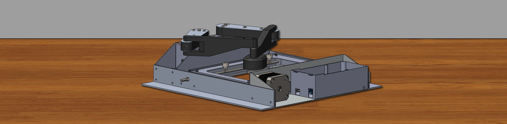
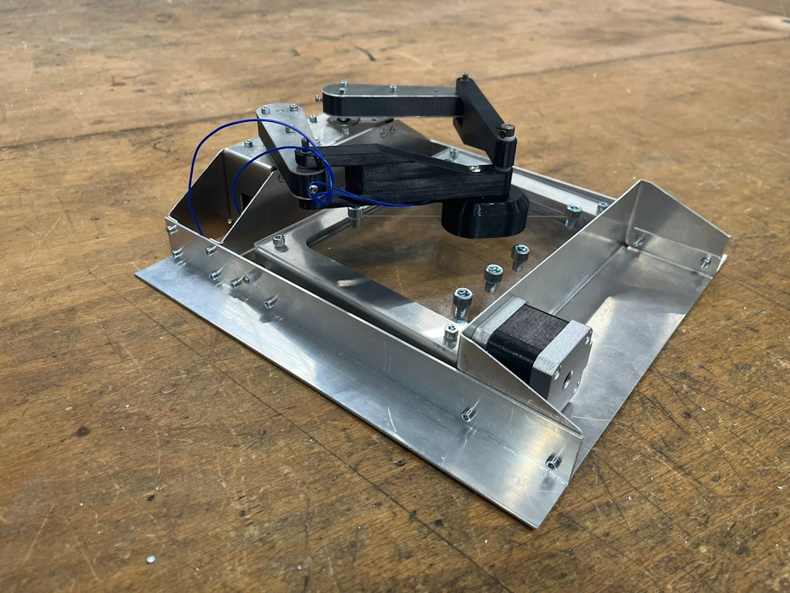
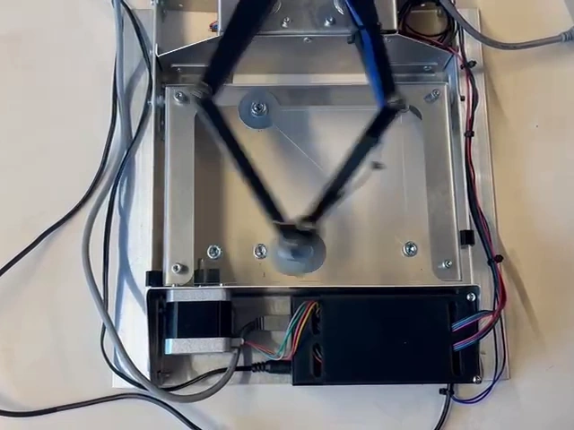

Project mechatronica
Omschrijving
Mechatronica is de combinatie van mechanica en elektronica. Het doel van dit project was om een machine te bouwen die zo snel mogelijk drie metalen ringen kon verplaatsen. Na een uitgebreide brainstormsessie is bepaald dat de SCARA-opstelling met twee roterende armen de snelste en meest uitvoerbare methode is om dit doel te bereiken. Er is een compact frame ontworpen waar alle motoren stevig gemonteerd konden worden. Na een proces van testen en reviseren zijn de armen nog verkleind, en de snelheid opgevoerd totdat de armen binnen slechts 1,6 seconden alle ringen kon verplaatsen, een mooie prestatie.

